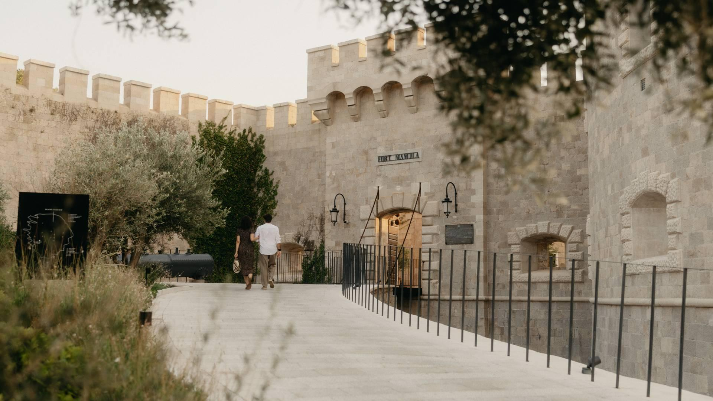
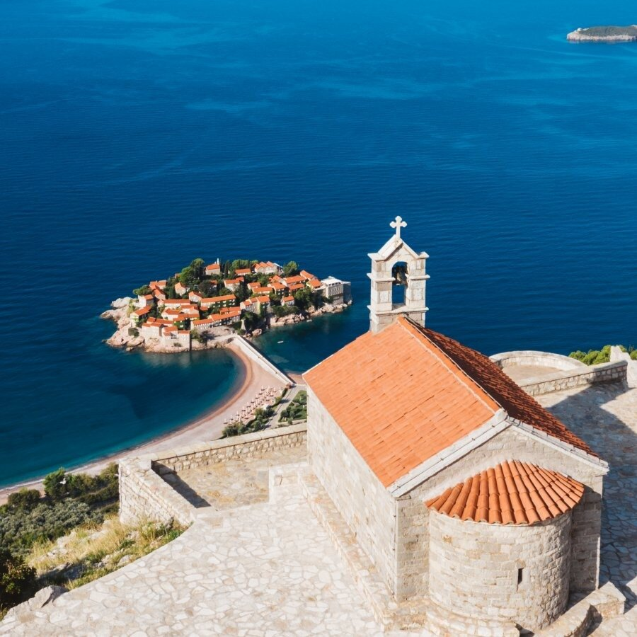

An ongoing, honest look at the luxury hotels of Montenegro — updated as I visit more properties, not written from press materials.
Montenegro doesn't get nearly the coverage it deserves for a country with this much dramatic coastline and this few truly luxury hotels. I'm building this guide one property at a time, as I actually visit — some as full stays with complete scoring, others as first looks ahead of an opening, clearly labeled either way.
Next up: One&Only Portonovi.

Mamula is a restored 19th-century fortress located on a small island at the entrance to the Bay of Kotor. The fortress was later used as a prison and concentration camp during WWII before eventually being converted into a luxury hotel. It now operates as Mamula Island by Banyan Tree.
I booked because I love history and was fascinated by the concept. It's not often you find a hotel where the history feels this central to the experience.
I stayed in one of the rooms located within the original fortress structure and would absolutely recommend doing so. The room itself was beautiful — thick stone walls, vaulted ceilings, and a feeling that you're actually staying inside the fortress rather than simply looking at it.
Many of the entry-level rooms are actually located in newer construction built above portions of the fortress and include balconies. Depending on your priorities, some people may prefer those. Personally, if I'm staying at Mamula, I want to be inside the original structure.
The room wasn't without issues, though. My shower flooded a significant portion of the bathroom floor during use, and there were several finish details — loose hardware and other small construction details — that felt below what I'd expect at this price point. Beautiful room. Not a perfectly executed room.
This is the reason to stay here. Arrival is by boat. The fortress is stunning, and the restoration is incredibly well done. I spent most of my stay simply walking around the island and exploring the property — the setting is unlike anything else I've experienced.
Whether converting a former prison and concentration camp into a luxury hotel is appropriate is probably a discussion bigger than this review, but I appreciated that the property doesn't appear interested in hiding its history. Regardless of where someone lands on that, it's hard to argue this isn't one of the most unique hotel concepts in Europe.
Nobody was rude, and everyone I interacted with was friendly — things just didn't feel particularly polished. At lunch I sat for around ten minutes before anyone greeted me. I ordered sparkling water and it never arrived; after asking a second time, it eventually showed up.
One evening I went to the speakeasy around 6:30 PM. Nobody was there. I waited around, walked through the space, and eventually gave up and went back to my room for a drink. Later I was told the bar had technically been open and there had simply been a miss.
The beach experience felt similarly hands-off — guests set up their own towels and loungers, with not much staff presence throughout the day. Individually these aren't major issues. Collectively they started to add up.
This was the weakest part of the experience for me. The first day I ordered sushi and an amberjack crudo — the sushi was fine, but the crudo I didn't finish; it was off texturally and unappealing. Dinner was at Celeste, the property's more casual restaurant, where I ordered the lamb kofta and again didn't finish it. Beyond the flavor, the presentation felt surprisingly basic for a hotel operating at this level.
The bigger issue was the overall F&B setup: the beach area has no food or beverage outlet, so if you want a drink, snack, or lunch, you're looking at roughly a ten-minute walk back to the nearest one. That felt like a significant miss given how much time guests spend there.
The thing that genuinely surprised me was the water policy. Tap water isn't drinkable, and guests receive one complimentary bottle per day. The following morning I requested another and was told I'd need to purchase one from the minibar — I've stayed at a lot of luxury hotels and honestly can't remember encountering that before.
The setting, design, and location are extraordinary. The operation simply isn't, unfortunately. When I mentioned some of the issues above at checkout, I was told that operating on an island creates logistical challenges because everything has to be brought in by boat. However, they decided to build a luxury hotel on an island — as a guest, I'm ultimately evaluating the experience that results from those decisions.
What's frustrating is that the potential here is enormous. With stronger service execution and a significantly better food and beverage program, I think this could be one of the most compelling luxury hotels in the Mediterranean. As it stands today, I found it far more impressive as a place than as a hotel.

I had the opportunity to spend a few hours at Aman Sveti Stefan today, tour Villa Miločer, and meet with the GM. Since I wasn't able to see the island itself — it's still being prepared for reopening — I don't consider this a review.
The first thing that surprised me was Villa Miločer itself. I assumed the Garden View Suites were inside the villa, but they aren't — the one I toured is in a separate building about a two-minute walk uphill, and apparently there are only two Garden View Suites there. The room was huge: a large bedroom, generous bathroom, then a hallway leading into a separate living and dining room. It felt much more residential than I expected.
The design is exactly what you'd imagine from Aman — quiet, understated, lots of Japanese influence, nothing trying too hard. One thing I honestly wasn't expecting: the air conditioning. The suite I toured had a portable floor unit venting out the window. It worked fine, but I definitely did a double take considering the nightly rate.
What I was most curious about going in was the beach situation, given everything that's happened over the past few years. From what I was told, King's Beach will remain open to locals from Sveti Stefan, although in a much more limited way — apparently only two chaise lounges will be reserved for them, at the end of the beach closest to the island. Interestingly, "locals" doesn't just mean anyone staying in town — it's tied to family name and whether you're actually from Sveti Stefan.
Queen's Beach, at least for now, is expected to remain exclusive to Aman guests, though parts of this are still under dispute. Since you access it through a gated Aman entrance, I'm honestly not sure what a different arrangement would even look like. Queen's Beach itself might be the prettiest beach I've seen in Montenegro.
Ironically, Villa Miločer wasn't nearly as private as I expected — there's a public walking path directly in front of it, plus a small public road locals use to get into town. Neither bothered me, but I noticed it. If absolute privacy is the priority, the island is still the obvious choice.
The spa was probably my favorite part of the visit. It's in a newer building rather than one of the historic ones — the indoor/outdoor pool has huge vaulted timber ceilings and opens directly toward Queen's Beach. There's also now a restaurant there, so I could easily see spending an entire afternoon between the spa, lunch, and the beach. It's reserved exclusively for hotel guests.
Worth noting: accessibility is pretty limited across the property, with hills, stairs, and uneven pathways throughout. Oddly, I came away thinking Villa Miločer actually makes more sense than the island for families with young kids, anyone pushing a stroller, or older guests.
As for the island itself, they're hoping to reopen around July 1, though they were careful not to guarantee that date. The room count hasn't changed — still 50 accommodations — but entry-level rooms won't be offered this season, and only 16 of the 27 Deluxe Cottages are expected to be available initially. Even within that category, sizes range from about 60 to 100 square meters since they're all converted historic homes.
Getting to the mainland from the island is either by walking the causeway, or taking a small boat to King's Beach and walking through a tunnel to Villa Miločer, the spa, and Queen's Beach. They're already fielding inquiries for full-property buyouts in 2028 — I was told those historically started around €150-200k before F&B.
After the tour I had lunch at Zuma. Service was fantastic; the sushi was fine but not particularly memorable. Still, having Zuma and Nammos within walking distance is a big improvement for anyone staying four or five nights. Worth knowing: there's a Janu under construction immediately next door, visible from parts of the property, though I didn't find it disruptive during my visit.
If flying in, I'd just use Tivat — helicopters are available, but it's not quite as seamless as somewhere like the Maldives since international arrivals still need to clear immigration before continuing to the resort.
I kept going back and forth on who Villa Miločer is actually for. By the end, I landed here: if traveling with kids, a stroller, or someone with mobility issues, I'd book Villa Miločer. If traveling as a couple already spending around €4,000/night, I'd absolutely spend the extra ~€200 and stay on the island — that's the experience I'd be flying to Montenegro for.
One last thing I appreciated: Aman asked that I not share any of the photos or videos I took because of their photography policy — no filming in public areas when other guests are present, no tripods, no drones. In a world where so many luxury hotels seem built around social media, I found that pretty refreshing.